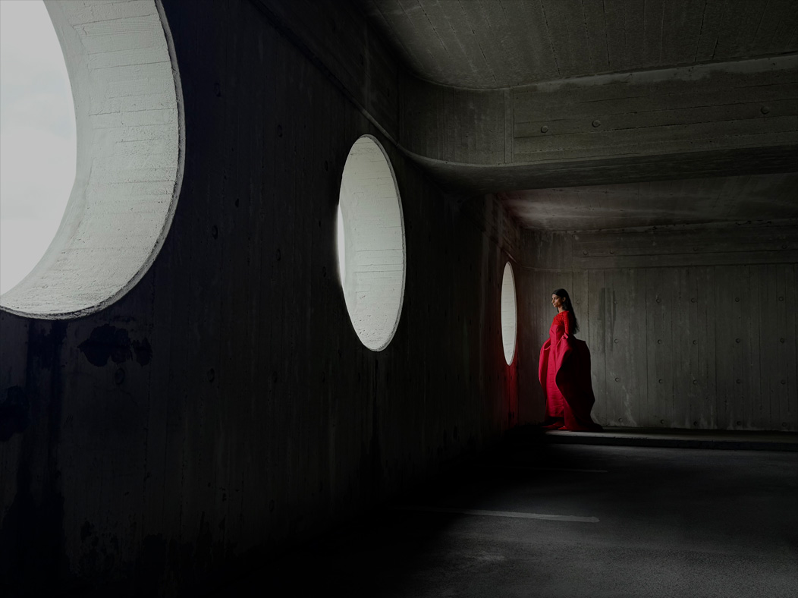
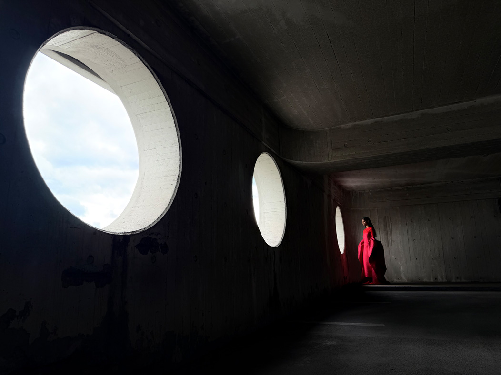
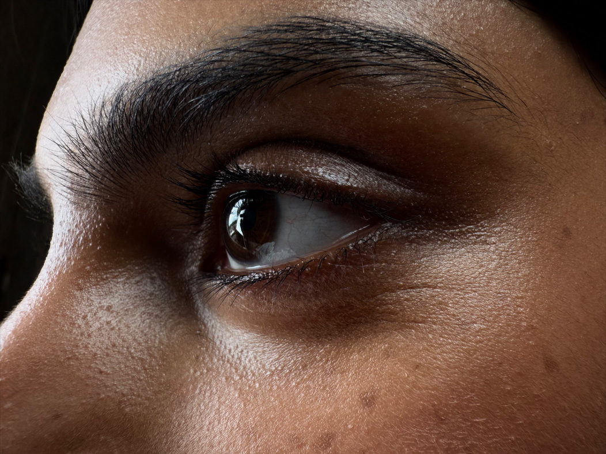

카메라
멀찌감치 앞서다.
최대
8배
광학 퀄리티 줌
전체
48MP
후면 카메라
iPhone 17 Pro의 카메라 시스템 전반에는 멀찍이 앞서 나가는 혁신이 깃들어 있습니다. 망원 카메라는 우리의 차세대 테트라프리즘 디자인과 56% 더 커진 센서를 자랑하죠. 환산 초점 거리 200mm의 8배 광학 퀄리티 줌으로,iPhone 사상 가장 긴 망원줌 인 총 16배 광학 줌 범위를 제공합니다. 덕분에 창의적인 선택의 폭이 훨씬 넓어졌고, 한층 더 먼 거리에서도 가까이 다가가 원하는 구도를 잡을 수 있죠.







주머니에 프로 렌즈 8개를 넣고 다니는 기분.
초고해상도 사진은 기본.
-
48MP Fusion 메인 카메라
24/48mm 초점 거리(1배/2배)
ƒ/1.78 조리개
2.44μm 쿼드 픽셀(각각 1.22μm)
-
48MP Fusion 와이드 카메라
13mm 초점 거리(0.5배/접사)
ƒ/2.2 조리개
1.4μm 쿼드 픽셀(각각 0.7μm)
-
48MP Fusion 망원 카메라
100/200mm 초점 거리(4배/8배)
ƒ/2.8 조리개
1.4μm 쿼드 픽셀(각각 0.7μm)